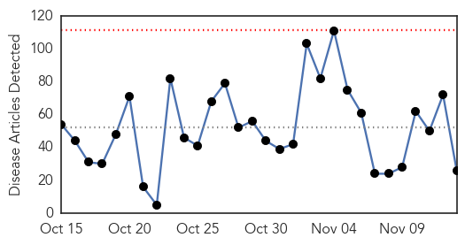
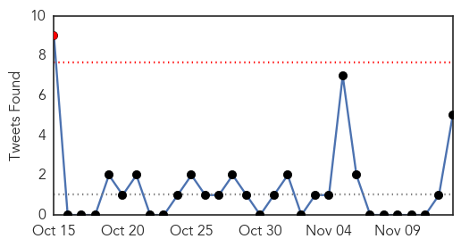
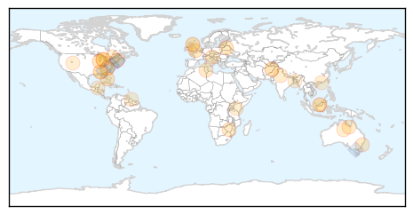
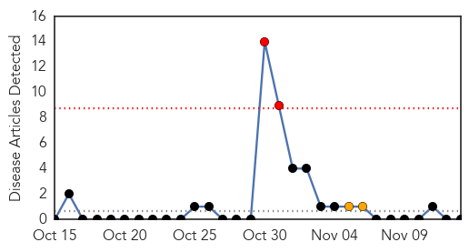

Unknown
30-Day Web Trend
0 alerts, 0 warnings

30-Day Twitter Trend
1 alerts, 0 warnings

Article Locations
Article Confidences

Top Articles:
- 0.981
- Nipah Virus Disease
- 0.970
- Not just time for the holidays; 'Tis the flu season!
- 0.960
- A "Quiet" Start to Flu Season
- 0.891
- PEDv pig disease could be given notifiable status in Scotland
- 0.862
- Contagious Eye Infection Spreads Across The Country
- 0.802
- Skunks test positive for rabies virus
- 0.788
- News Scan for Nov 12, 2015
- 0.729
- Belarus' measures against African swine fever praised
- 0.725
- Is there a way forward for CFS/ME?
- 0.714
- MRSA superbug becoming stronger due to antibiotics, study reveals
- 0.711
- College flu vaccination challenge pits MSU against Michigan
- 0.647
- Ethiopia: UN Emergency Fund releases $17 million to help communities affected by worst drought to hit Ethiopia in decades -
- 0.642
- Tropfest Festival Cancelled Due To Monetary Issues. Las Vegas Blog
- 0.642
- US military ‘reasonably certain’ drone strike killed ‘Jihadi John’
- 0.642
- Austria to build border fence to manage migrant influx
- 0.617
- Bush syphilis rates soar
- 0.598
- DNR encourages hunters in affected areas to have deer checked for
- 0.585
- 500 burn cases reported in city
- 0.563
- Bush syphilis rates soar
- 0.558
- Culling of local pigs sparks concern over antibiotic abuse
- 0.557
- Health care under attack in Quebec
- 0.545
- Is the United States Holding Back?
- 0.543
- Healthy Living and Urinary Tract Infections
- 0.527
- Kenya gets Sh1.3b US grant for public health labs > IGIHE.com English Version
- 0.525
- Govt, opposition exchange 'prescriptions' for reducing maternal deaths
- 0.510
- Ethiopia faces worst drought in decades
Top Tweets:
- 0.739
- RT: Rectification Mise à l'écart de 490 procès verbaux en lieu et place de 290 annoncés ultérieurement Haiti htt…
- 0.669
- Flu Fact 6: The flu leads to 200000+ hospital stays every year. It’s not JUST the flu. https://t.co/PXHUexQAyI StayintheGame
- 0.543
- Don’t wait – get the flu vaccine and protect yourself from seasonal flu. https://t.co/F9Ds8DwofQ HealthySelf
- 0.515
- RT: Don’t wait – get the flu vaccine and protect yourself from seasonal flu. https://t.co/F9Ds8DwofQ HealthySelf
- 0.511
- An everlasting flu vaccine wouldn't that be great...
Bubonic Plague
30-Day Web Trend
2 alerts, 2 warnings

30-Day Twitter Trend
0 alerts, 0 warnings

Article Locations

Article Confidences

Top Articles:
-
No articles found for Nov 13, 2015
Top Tweets:
-
No tweets found for Nov 13, 2015